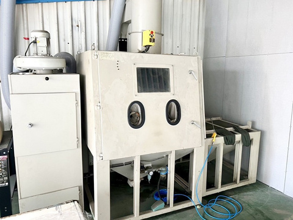
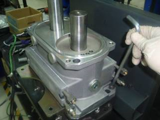
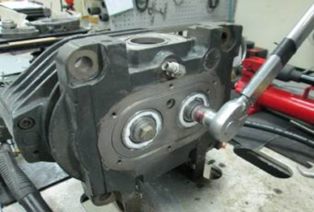
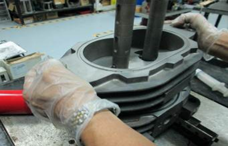
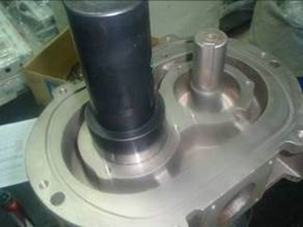
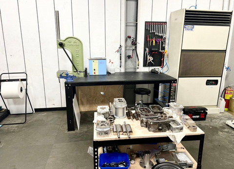
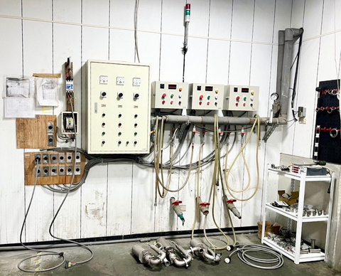
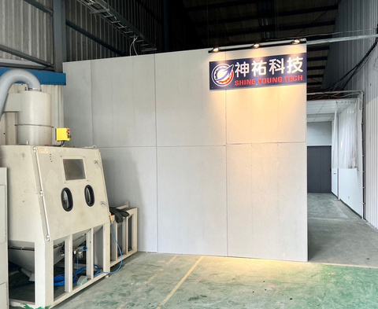

成立於 2025 年 12 月，專業 Localize Dry Pump Overhaul Service Contractor。

神祐科技有限公司成立於 2025 年 12 月，為一家專業 Localize dry pump overhaul service contractor，主要業務包含各式真空 PUMP 維修保養、中古機及零配件販售，我們聚焦於協助企業優化營運、提升營運與創造價值。
我們有經驗豐富的維修團隊與訓練有素的技術人員，秉持著專業化、永續發展的精神，提供客戶全方位最高品質的服務。未來，我們仍會持續投入產品的規劃與開發，進行概念與技術發展，進而促使產品、策略、市場及技術創新，達到事業的成長目標，以因應瞬息萬變的全球市場。


每一顆進場的幫浦，都經過嚴謹的七道工序，確保維修品質。


從客戶提出維修需求到出貨，每個節點都清楚記錄，維修合格才會出貨。
配備專業噴砂室、高溫洗淨設備與精密檢測儀器，確保每一次維修都符合原廠規格。


